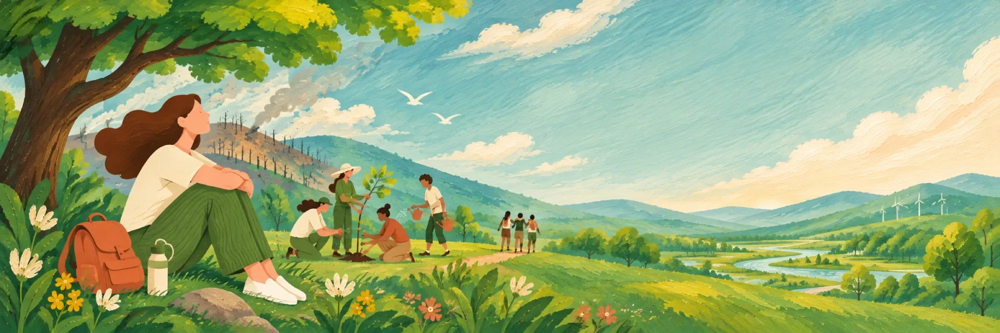

Деревья —
живой насосдля углерода
Дерево почти целиком сделано из воздуха. Каждый год, наращивая древесину, оно вытягивает из атмосферы углекислый газ — тот самый, которого человек выбросил слишком много. Леса суши вместе с океаном забирают около половины наших выбросов. Это не делает деревья «спасением» от климатического кризиса, но делает их главным живым союзником: без них воздух нагревался бы заметно быстрее.
Почему Земля нагревается
Солнце греет Землю видимым светом. Нагретая поверхность отдаёт это тепло обратно — но уже в виде невидимого инфракрасного излучения. Если бы у планеты не было атмосферы, почти всё это тепло уходило бы в космос, и средняя температура у поверхности была бы около −18 °C.
Атмосфера устроена иначе. Азот и кислород, из которых она в основном состоит, для инфракрасного излучения прозрачны. А вот молекулы углекислого газа (CO₂), метана и водяного пара его поглощают — и тут же переизлучают во все стороны, в том числе обратно вниз, к земле. Важно: они не «отражают» тепло, как зеркало, а задерживают его, как одеяло, которое не греет само, но не даёт остыть. Это и есть парниковый эффект. Сам по себе он благо: благодаря ему средняя температура Земли около +15 °C, а не −18 °C.
Проблема — в количестве. До промышленной революции в каждом миллионе молекул воздуха было около 280 молекул CO₂. Сегодня их около 425 — больше, чем когда-либо за последние сотни тысяч лет. Источник известен точно: каждый год человечество сжигает уголь, нефть и газ и вырубает леса, выбрасывая около 40 миллиардов тонн CO₂. Каждая лишняя молекула чуть плотнее подтыкает одеяло — и планета медленно перегревается.
Из этой картины следуют два способа остановить нагрев: перестать добавлять CO₂ в воздух — и забирать из воздуха то, что уже выброшено. Первое умеем делать только мы. Второе миллионы лет умеет делать природа, и главный её инструмент на суше — дерево.
Дерево, сделанное из воздуха
Кажется очевидным, что дерево растёт «из земли». В XVII веке фламандский врач Ян ван Гельмонт решил это проверить: посадил ивовый прутик в кадку с взвешенной землёй и пять лет только поливал его. Ива прибавила около 74 килограммов, а земля потеряла всего несколько десятков граммов. Ван Гельмонт решил, что дерево сделано из воды. Он ошибся только наполовину: главный строительный материал дерева — углекислый газ из воздуха.
Механизм называется фотосинтез. Лист поглощает CO₂ через крошечные поры-устьица, воду — через корни, и энергией солнечного света собирает из них сахар:
6 CO₂ + 6 H₂O + свет → C₆H₁₂O₆ + 6 O₂
Углерод остаётся в дереве, кислород выходит наружу. Из сахаров дерево строит целлюлозу и лигнин — древесину. Почти половина сухой массы любого дерева — это углерод, и практически весь он когда-то был частью воздуха. Минералы из почвы составляют лишь около процента.
Отсюда простое правило, которое стоит запомнить: каждая тонна сухой древесины — это примерно 1,8 тонны углекислого газа, вынутого из атмосферы. Взрослый дуб, сосна или ель за жизнь запасают в стволе, ветвях и корнях от нескольких до десятков тонн CO₂. И вопреки интуиции, старые большие деревья не «отработали своё»: исследование 403 видов деревьев по всему миру показало, что скорость прироста массы у большинства из них с возрастом не падает, а растёт — крупное дерево ежегодно добавляет больше древесины, чем молодое.
Сколько забирают леса
Учёные проекта Global Carbon Budget каждый год сводят баланс: сколько углерода человечество выбросило и куда он потом делся. Картина за последнее десятилетие (2014–2023) такая. Из всего выброшенного почти половина остаётся в воздухе и копится там — это и есть рост кривой Килинга. Около четверти растворяется в океане. И около трети забирает суша — прежде всего растущие леса.
ископаемое топливо + вырубки
леса и почвы
Если считать именно леса, то, по глобальным картам потоков углерода (Harris и соавторы, 2021), леса мира ежегодно поглощают около 15,6 млрд тонн CO₂. Но вырубки, пожары и деградация лесов возвращают в воздух около 8,1 млрд тонн. В итоге чистый вклад лесов — около 7,6 млрд тонн CO₂ в год. Это много: примерно пятая часть всех человеческих выбросов. И это одновременно предупреждение: больше половины того, что леса забирают, мы сами же у них и отнимаем, сводя и сжигая их.
Для России это особенно важно. Российские леса — около 815 миллионов гектаров, примерно пятая часть всех лесов планеты. Тайга — один из крупнейших наземных стоков углерода в мире. И один из самых уязвимых: лесные пожары в Сибири последних лет за один сезон выбрасывали в воздух сотни миллионов тонн CO₂.
Где лес хранит углерод
Забрать углерод из воздуха — полдела. Важно, где и как долго он потом хранится. Леса планеты держат примерно 860 миллиардов тонн углерода — почти столько же, сколько его сейчас во всей атмосфере. Причём в самих деревьях — меньше половины.
стволы, ветви, листва, корни
гумус, корни, грибница
Почти половина лесного углерода спрятана в почве: в гумусе, отмерших корнях, грибнице, которая связывает деревья подземной сетью. Этот запас копится веками и тысячелетиями, особенно в холодных северных лесах и болотах, где разложение идёт медленно. Поэтому сохранить старый лес несравнимо важнее для климата, чем посадить новый: при вырубке и распашке в воздух уходит не только древесина, но и часть почвенного углерода, накопленного за столетия.
Больше, чем склад углерода
Свести роль деревьев к поглощению CO₂ — значит увидеть в лесе только бухгалтерию. Лес — это система, на которой держится жизнь суши.
- Вода. Дерево поднимает из почвы сотни литров воды в день и испаряет их через листья. Над большими лесами формируются облака и дожди, которые уходят вглубь материков. Российские физики Анастасия Макарьева и Виктор Горшков предложили гипотезу «биотического насоса»: леса не просто испаряют влагу, а буквально притягивают океанский воздух вглубь суши. Гипотеза спорная, но то, что вырубка лесов меняет режим осадков, подтверждено многими наблюдениями.
- Почва. Корни скрепляют грунт, опад кормит почвенную жизнь. Там, где лес сведён, почву смывает и выдувает за считаные годы.
- Дом для видов. В лесах живут около 80% видов земноводных, 75% видов птиц и 68% видов млекопитающих (ФАО, 2020). Лес — главная копилка биоразнообразия суши.
- Воздух. Деревья выделяют кислород — но здесь нужна честность: «лёгкие планеты» — скорее метафора. Около половины кислорода Земли производит океанский фитопланктон, а взрослый лес почти весь свой кислород сам же и расходует на дыхание и разложение опада. Запасов кислорода в атмосфере хватит на тысячи лет; лес ценен не этим, а тем, что держит углерод, воду и жизнь.
Чего деревья не могут
Деревья — лучшая природная технология удаления углерода из воздуха. Но вокруг них много обещаний, которые не выдерживают арифметики.
Посадками нельзя «отменить» ископаемое топливо. Только от сжигания угля, нефти и газа человечество выбрасывает около 37 млрд тонн CO₂ в год. Чистый сток всех лесов мира — около 7,6. Даже удвоив его, мы не догоним выбросы. Деревья работают как помощь сокращению выбросов, а не как замена ему.
«Триллион деревьев» оказался преувеличением. В 2019 году широко разошлась работа, по которой восстановление лесов на 0,9 млрд гектаров могло бы поглотить две трети всего накопленного человеком углерода. Её быстро раскритиковали: часть «доступных» земель — степи, саванны и тундра, где деревьям не место, а оценки запасов были завышены. Авторы внесли исправления.
Дерево — медленное и не вечное хранилище. Саженец десятилетиями наращивает заметную массу, а пожар, засуха, жук-короед или вырубка могут вернуть весь накопленный углерод в воздух за один сезон. Посадить — это начало, а не результат: результат — выросший и сохранённый лес.
Не всякая посадка полезна. Монокультура одного вида на месте луга или болота может навредить сильнее, чем помочь: уничтожить естественные экосистемы, высушить почву, а на севере — сделать поверхность темнее и теплее зимой, когда тёмный лес сменяет белый снег. Сажать стоит местные виды, в подходящих местах, и прежде всего — восстанавливать там, где лес был.
Итог: две стрелки
Климатическая задача сводится к двум стрелкам. Первая — поток углерода из-под земли в воздух, который создали мы; её нужно перекрыть, сокращая сжигание ископаемого топлива. Вторая — поток из воздуха обратно в живое: в древесину, корни, почву. Её нужно беречь и усиливать. Деревья — главные мастера этой второй стрелки на суше. Они сделаны из того самого углерода, которого в воздухе слишком много, и каждый год, нарастая новым кольцом, возвращают его в землю.
Отсюда и самый практичный вывод. Беречь старые леса — самое эффективное, что можно сделать для климата прямо сейчас. Восстанавливать леса там, где они были, местными видами — второе. А вырастить своё дерево из жёлудя или семечка, подрастить саженец, высадить его и довести до взрослого — это уже не абстрактная климатическая политика, а дело, доступное каждому. Об этом — следующий текст.
Читайте также: Дерево из воздуха (большая версия) · Круговорот углерода: одна лишняя стрелка · Кривая Килинга · Лесная медицина
- NOAA Global Monitoring Laboratory. Trends in Atmospheric Carbon Dioxide (Mauna Loa) — среднегодовая концентрация CO₂ ~425 ppm в 2024 году.
- IPCC (2021). Climate Change 2021: The Physical Science Basis. Contribution of Working Group I to the Sixth Assessment Report, гл. 7 — энергетический баланс Земли и парниковый эффект.
- Friedlingstein P. et al. (2025). Global Carbon Budget 2024. Earth System Science Data 17, 965–1039.
- Harris N. L. et al. (2021). Global maps of twenty-first century forest carbon fluxes. Nature Climate Change 11, 234–240.
- Pan Y. et al. (2011). A large and persistent carbon sink in the world’s forests. Science 333, 988–993.
- Stephenson N. L. et al. (2014). Rate of tree carbon accumulation increases continuously with tree size. Nature 507, 90–93.
- FAO (2020). Global Forest Resources Assessment 2020; The State of the World’s Forests 2020: Forests, biodiversity and people.
- Makarieva A. M., Gorshkov V. G. (2007). Biotic pump of atmospheric moisture as driver of the hydrological cycle on land. Hydrology and Earth System Sciences 11, 1013–1033.
- Bastin J.-F. et al. (2019). The global tree restoration potential. Science 365, 76–79; критика — Veldman J. W. et al. (2019), Comment on «The global tree restoration potential», Science 366.